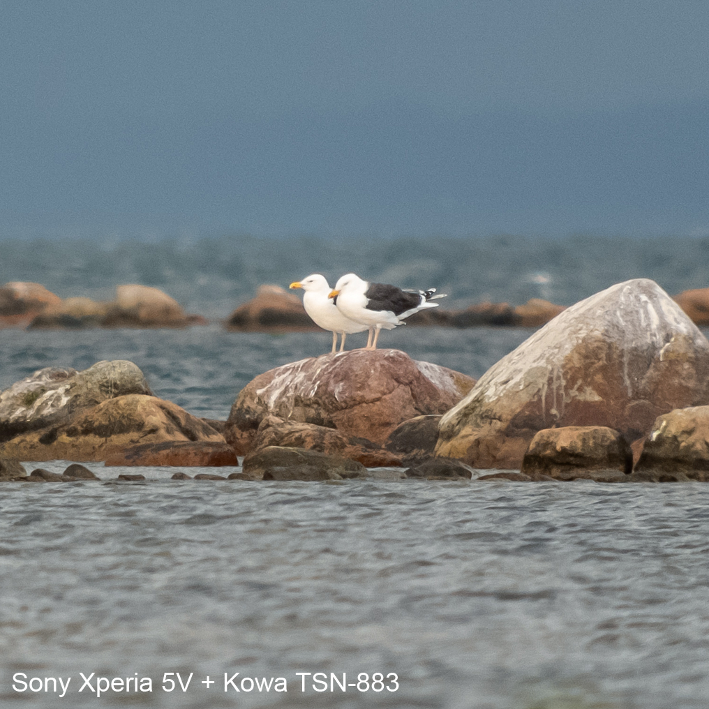
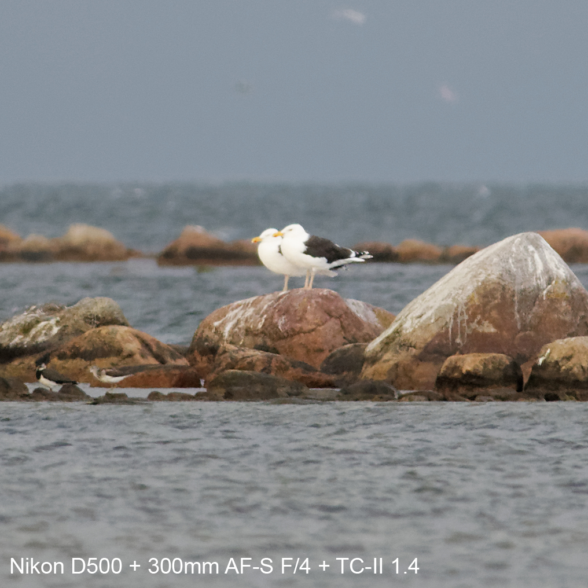
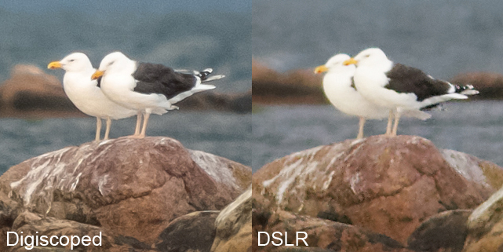
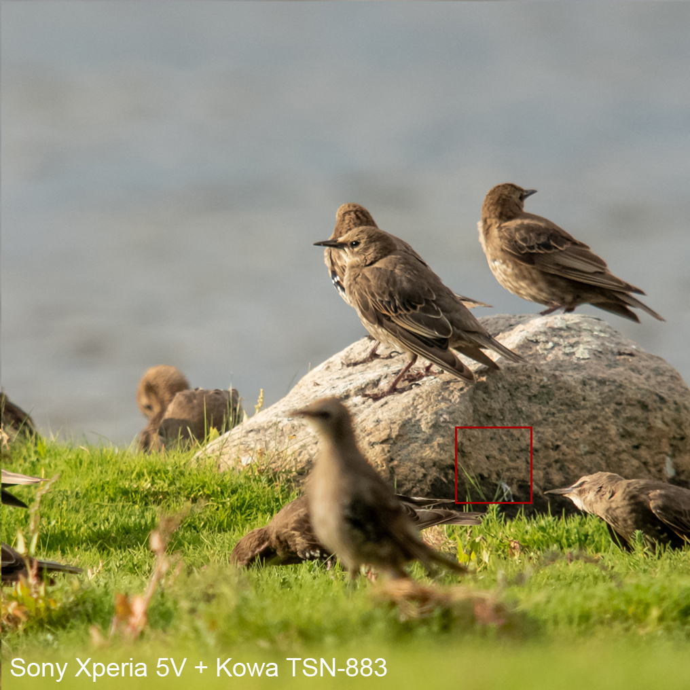
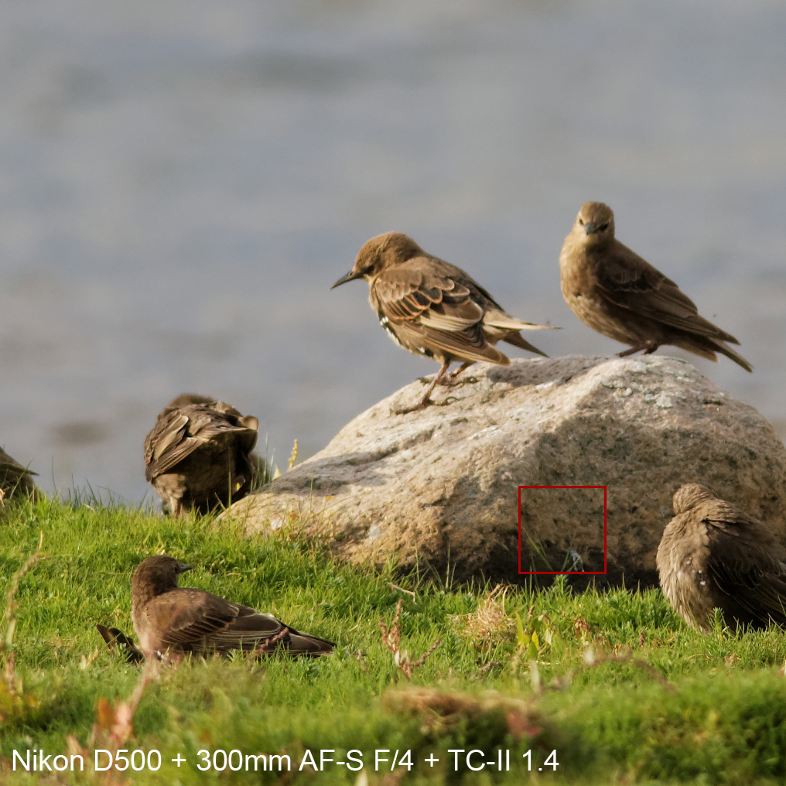
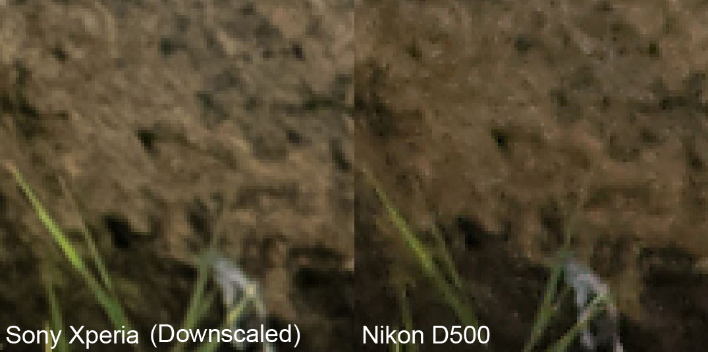
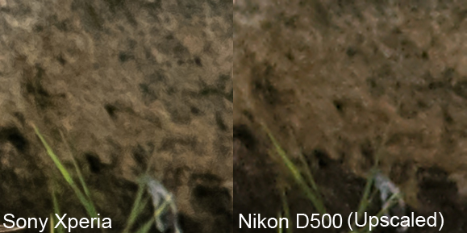
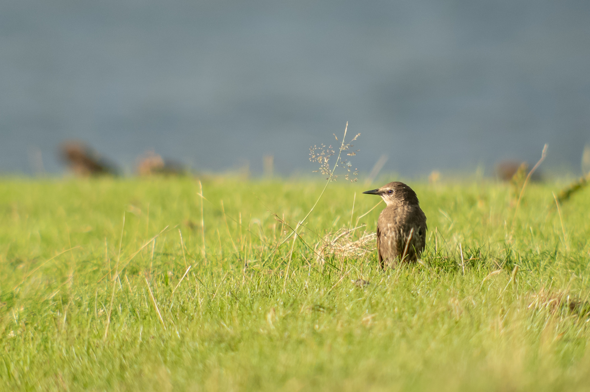

Exploring the capabilities of a new phone
As a birder, getting consistently good photos is crucial. The difference between ecstacy and catastrophe often depends on getting documentation that supports your claimed identification. I recently got a new phone and I’m curious about its capabilities of taking good photos, both in terms of being able to capture detailed information down to a pixel level, but also in terms of taking aesthetically pleasing photos of birds and their surroundings.
Some notes on editing
All photos are shot in RAW format and are afterwards (subjectively) edited to look good. I shoot in RAW for flexibility of exposure, color balance, noise reduction, and sharpening. I especially want avoid locking in noise reduction and sharpening which often result in ugly “digital” artefacts. However, comparing unedited RAW files from different cameras and brands can be misrepresentative since photo editing programs may not necessarily interpret the encoded data from different RAW formats in the same way. As of now, I have edited the phone pictures to look good on my phone, and then edit the camera photos to match them as closely as possible. I may do more technical processing in the future, but this method works right now.
Sony Xperia 5V with Kowa TSN-883 vs Nikon DSLR
Below are a few photos comparing the digiscoping setup to a decent wild-life camera setup; a Nikon D500 + 300mm AF-S F/4 + TC-II Teleconverter.


The Xperia picture appears clearer, less smudgy, and has more of a 3D feeling than the Nikon D500 picture. I also find the digiscoped picture less difficult to look at - it has a calmer appearance and my eyes aren’t as confused about what they’re seeing.
You may notice that the upper photo has a much deeper blue color in the distance; the difference is due to a heavy rain in background of the second photo.
Here is a side-by-side.

The Sony Xperia picture is better. However, given how much range a digiscoping rig gets, I’m surprised the difference between them isn’t bigger, in this case.
Below is a comparison of some starlings.


Given that the starling in focus on the first picture left the rock, and the one behind is out of focus, let’s compare more stable areas of the picture. Let’s do some pixel peeping in the red areas on the shots above.
Below are two comparison photos. The first shows the Sony Xperia shot downscaled to match the Nikon’s resolution, and the second shows the Nikon shot upscaled to match the Sony Xperia’s resolution.


To me, it’s clear that the digiscoping setup with the Sony Xperia results in pictures with better ‘pixel control.’ In both comparisons, the Sony pictures are sharper, snappier, and have more depth with fewer artifacts. The blades of grass appear smoother and sharper. The Sony shots seem to have a higher density of information per ‘real-world unit’.
As for the aesthetic pleasure of pictures, I believe the Sony has really high potential. I’ll revisit both technical and aesthetic aspects in future posts.
